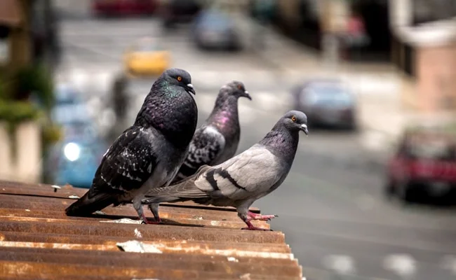
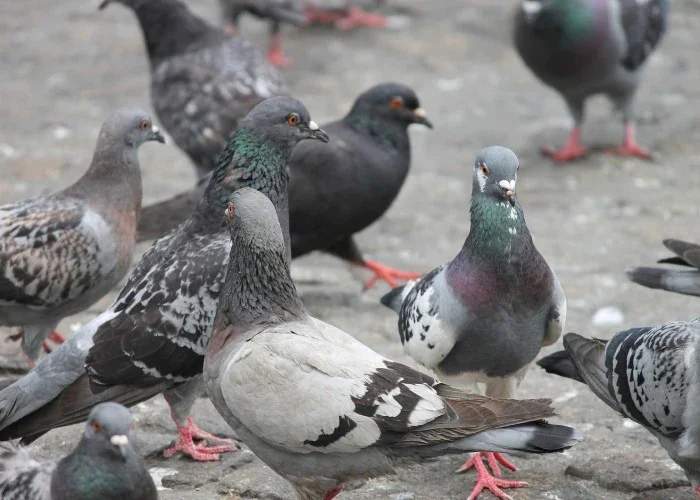

Dépigeonnisation à Casablanca
Société de dépigeonnisation, éloignement des oiseaux et pigeons à Casablanca
Notre entreprise dépigeonnisation à Casablanca est en mesure de vous apporter des réponses et les solutions pour maîtriser et traiter les volatiles.
Les pigeons sont devenus des oiseaux très nuisibles au fil des années. D'ailleurs il est interdit de nos jours de donner à manger à ces derniers sous peine de recevoir une amende. Il faut dire que la prolifération du pigeon ainsi que de certains autres oiseaux est devenu un véritable fléau pour les entreprises, les municipalités et les particuliers.
Il est important de mettre en place une véritable stratégie pour se débarrasser de ces oiseaux à Casablanca en contactant sans perdre de temps, les professionnels de la lutte anti-oiseaux et anti-pigeons de chez WINBEST DERATISATION.
Les pigeons et certains oiseaux comme les moineaux, les mouettes, les goélands ou les étourneaux sont porteurs de diverses maladies et peuvent causer des dégâts importants sur des bâtiments.

La société WINBEST DERATISATION est spécialisée dans le traitement de dépigeonnisation à Casablanca.
Caractéristiques du pigeon et des oiseaux nuisibles au Maroc
Le pigeon domestique ou pigeon des villes
Le pigeon domestique est un oiseau très envahissant qui habite principalement en ville pour la simple et bonne raison qu'il peut y trouver de quoi se nourrir très facilement et aussi de quoi de se loger pour se reproduire. De plus il se protège des autres prédateurs. Il faut savoir que nos professionnels de dépigeonnisation sont mieux formés aux habitudes et aux modes modes des pigeons et autres oiseaux nuisibles pour vous en
débarrasser avec des méthodes bien spécifiques.
Le pigeon domestique fait partie de l'espèce du pigeon biset qui appartient à la famille des Columbidés.
Le pigeon domestique mesure environ 30 cm et 40 cm avec une envergure qui varie entre 62 cm et 72 cm. En général un pigeon pèse entre 250 g et 450 g mais de nos jours certains pigeons domestiques ont un poids beaucoup plus important du fait qu'ils sont suralimentés en ville.
débarrasser avec des méthodes bien spécifiques.
Le pigeon domestique fait partie de l'espèce du pigeon biset qui appartient à la famille des Columbidés.
Le pigeon domestique mesure environ 30 cm et 40 cm avec une envergure qui varie entre 62 cm et 72 cm. En général un pigeon pèse entre 250 g et 450 g mais de nos jours certains pigeons domestiques ont un poids beaucoup plus important du fait qu'ils sont suralimentés en ville.
Dépigeonnisation à Casablanca
Le pigeon des villes a la tête, le cou et la poitrine bleu gris mais il en existe de diverses autres couleurs. Ils ont une iridescente qui peut être brillante, jaune, rouge, vert le long du cou et au niveau des plumes qui recouvrent les ailes. Le pigeon domestique a les yeux oranges, rouge ou doré avec un point noir. Le bec est plus foncé entre le gris et le noir et les pattes sont pourpres.
La femelle pond 2 ou 3 couvées par an avec 2 œufs à chaque fois. Le temps d'incubation est d'environ 18 jours et les oisillons restent environ 36 jours dans le nid. Il a une espérance de vie d'environ 6 ans.
Les pigeons des villes se nourrissent de graines, de la végétation et aussi de tous nos déchets. C'est d'ailleurs à cause de nos déchets alimentaires que les pigeons ont pu très facilement proliféré en ville.
Les nuisibles sont une affaire de spécialistes, nos techniciens sont formés et diplômés pour lutter contre les pigeons.
Le pigeon domestique est un animal grégaire. Il aime vivre en colonie plus ou moins importante ce qui est d'ailleurs le problème majeur avec cet oiseau. En effet, les pigeons vont se concentrer au même endroit et par conséquent ils vont faire des dégâts.
Les goélands à Casablanca
Les goélands et les mouettes se concentrent la plupart de temps près des ports de pêche et les villes côtières. Ils font partie de la famille des Lardage.
Seulement quelques espèces sont nuisibles comme le goéland brun, le goéland argenté ou la mouette rieuse.
Le goéland brun a des pattes jaunes avec des ailes et le dos noir ou gris au bout blanc. Le bec est jaune avec une tâche rouge. La tête devient grise en hiver.
Protéger votre logement des pigeons ou autres volatiles est important, contacter notre entreprise spécialiste anti nuisibles.
Le goéland argenté est surtout blanc et gris. Son bec est aussi jaune avec un
point rouge. Il possède des pattes roses claires. Son iris est jaune.
Il n'est pas toujours très simple de pouvoir identifier un goéland car la couleur des plumes peuvent changer selon les saisons.
Une infestation de pigeons peut vous causer différents tracas, ne vous laissez pas infester. Notre société de lutte anti pigeons à Casablanca sera réactive et efficace.

point rouge. Il possède des pattes roses claires. Son iris est jaune.
Il n'est pas toujours très simple de pouvoir identifier un goéland car la couleur des plumes peuvent changer selon les saisons.
Une infestation de pigeons peut vous causer différents tracas, ne vous laissez pas infester. Notre société de lutte anti pigeons à Casablanca sera réactive et efficace.
Le moineau domestique à Casablanca
Il faut se méfier du moineau domestique car il peut être responsable de dégradations importantes surtout pour les entreprises agroalimentaires à Casablanca. En effet cet oiseau peut contaminer des denrées alimentaires avec ses déjections et ils sont capables de détruire les emballages pour se nourrir.
Le moineau domestique mesure moins de 15 cm. Les mâles se distinguent de la femelle avec une couronne grise au niveau de la tête ainsi qu'une tâche noire sur la gorge. Les femelles et les oisillons sont en général de couleur brune.
Un moineau domestique peut vivre jusqu'à 7 ans. La femelle peut faire 3 couvées de 4 à 6 œufs à chaque fois. Il se reproduit au début du printemps et jusqu'à la fin de l'été.
Notre société contre les pigeons est présente dans votre ville pour répondre à toutes demandes de lutte contre les nuisibles. Des techniciens applicateurs de terrain certifiés et formés pour éliminer vos problèmes causés par les pigeons sont à votre disposition au sein de notre société.
Un moineau domestique va utiliser tout le temps le même nid ce qui entraîne une augmentation des insectes nuisibles à l'intérieur de ce dernier
Maladies transmises et dégâts causés par les pigeons et autres oiseaux à Casablanca
Le pigeon est un oiseau nuisible du fait de son nombre important qui ne cesse de croître.
Un pigeon des villes transporte divers insectes comme des puces, des tiques, des mites, des poux et autres qui peuvent nous apporter des maladies et divers problèmes de santé. Ces derniers peuvent être des infections plus ou moins graves pour notre santé. Le pigeon domestique est vecteur de virus, de bactéries, de parasites et autres.
Au niveau des dégâts, les pigeons domestiques ont envahi nos parcs et jardins publics pour se nourrir. Ces derniers vont ensuite se loger sur nos bâtiments, nos musées et ils dégradent l'architecture. Ils salissent les voitures, nos balcons, nos façades et autres avec leurs déjections.
Traiter efficacement votre infestation de pigeons est primordial, contactez notre société experte.
De plus le pigeon des villes est capable de bouger des tuiles, de bloquer une gouttière, les conduits d'aération ou encore les évacuations des cheminées en fabriquant un nid.
Lorsqu'ils sont en grand nombre, ils peuvent aussi être très nuisibles au niveau sonore car ils ne cessent de roucouler et ils dégagent des mauvaises odeurs.
Pour toutes ces raisons, il faut se débarrasser au plus vite des pigeons car plus vous allez les laisser s'installer et plus ils seront difficiles à éliminer. Notre société de dépigeonnisation vous assure la protection de vos biens en éradiquant la propagation du pigeon avec divers moyens. Il est bon de rappeler une nouvelle fois que seule une entreprise comme WINBEST DERATISATION est en droit de chasser les pigeons.
Les autres oiseaux nuisibles comme le moineau domestique sont aussi vecteurs de maladies. De plus ce petit oiseau est une vraie plaie pour les sociétés agroalimentaires.
L'objectif de notre société est de vous satisfaire dans une lutte anti-pigeons.
Quelles sont les méthodes pour se débarrasser des pigeons domestiques ?
Il faut commencer par tout faire pour ne pas attirer les pigeons domestiques. Pour cela il y a des gestes simples de la vie de tous les jours à respecter.
Notre entreprise vous préconise de vérifier les points suivants :
- Ne pas leurs donner à manger sur sa terrasse ou sur son balcon. D'ailleurs vous risquez une amende si on vous dénonce.
- Ne pas les attirer en jetant des miettes de pain ou autres quand vous êtes dans un parc, un jardin public ou autres. Les pigeons domestiques sont souvent concentrés là où il y a beaucoup de passages.
- Diminuer la nidification en mettant en place des protections.
Cependant si vous remarquez la présence de pigeons domestiques ou d'autres oiseaux nuisibles, il faut prendre contact avec notre société spécialisée dans la luttes contre ces nuisibles. Il y a diverses solutions qui sont très efficaces pour ne plus que les pigeons des villes, les moineaux domestiques ou autres viennent souiller vos bâtiments, vos balcons, vos façades ou autres.
Il est important de nous appeler au plus vite afin que nous puissions faire un bilan des solutions anti pigeons à mettre en place. Après avoir étudié votre problème de pigeons ou d'oiseaux nuisibles, nous pourrons établir un devis. Une fois que vous aurez accepté ce dernier, nous pourrons mettre en place notre solution pour vous débarrasser du pigeon, du moineau ou autres.
De plus, nous allons vous donner des conseils pour vous permettre de ne plus les attirer. Nous faisons aussi un suivi des actions mises en place pour vérifier qu'elles soient bien efficaces et nous sommes aussi capables de les adapter.